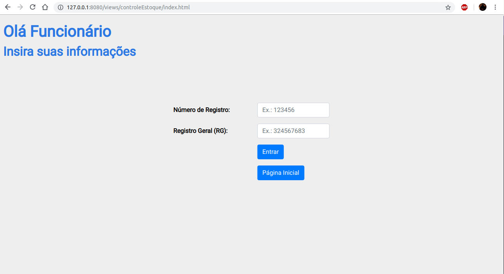
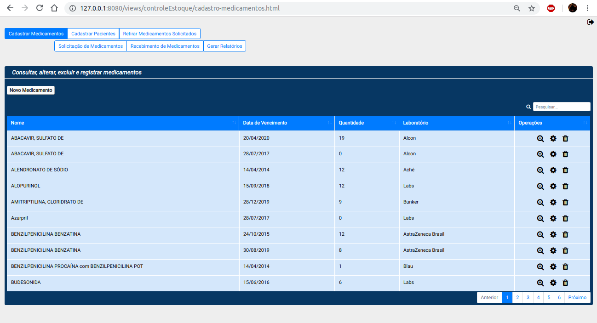
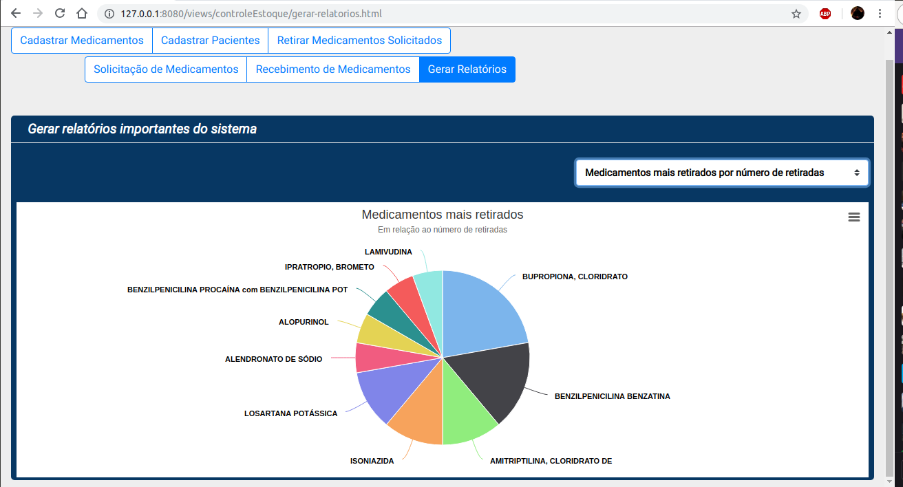
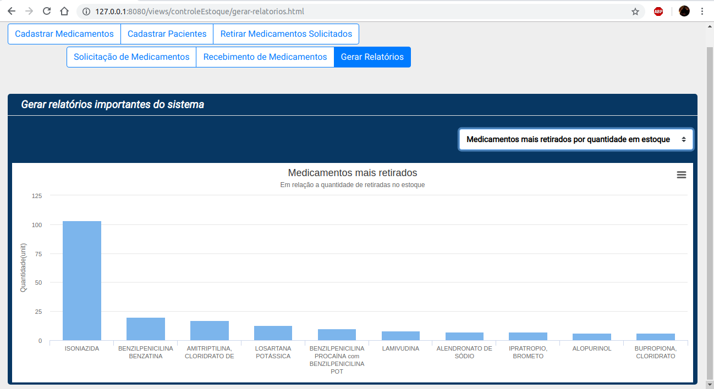

Fila Zero
About Project
It consists of an integrated academic project. The reasons for choosing the proposed system are: the population doesn't have to go to the health center without being sure of obtaining a certain drug, which would avoid huge queues for the request.
Therefore, there are two sides of the system: population-focused, online orders without the need to move to the location, and focused on health care worker, who will use the system to control and manage the stock of drugs that are supplied to the population.
The system developed is using web services, where the back-end/server provides an API that the front-end/client consumes. I've developed mostly on the front-end than back-end.
 In addition to being a promising system, unfortunately it was not possible to develop the whole system because of the complexity and size, only a large part of the stock control subsystem. However, I learned a lot design patterns, architecture and best practices. Right below are links with more details about the project (documentation, codes, business rules).
Related links:
Work presentation Fila Zero
Documentation Fila Zero
Front-end code
Back-end code